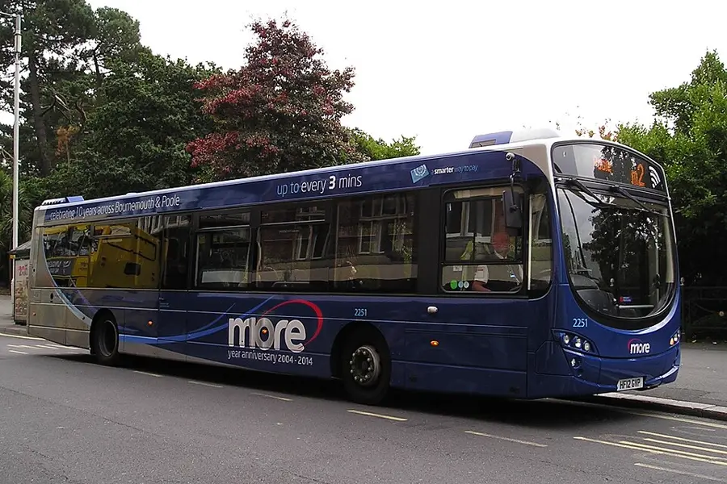

대표 로고대표 브랜드 마크
대표 로고대표 브랜드 마크볼보버스 Volvo Buses
볼보버스(Volvo Buses)는 스웨덴의 상용차 제조사이다. 주로 버스를 제작하며 차체까지 제작하고, 볼보의 버스 사업 부문이 분리되면서 1968년에 설립되었다.
최종 업데이트
볼보버스는 어떤 브랜드인가
볼보버스는 스웨덴 예테보리에 본사를 둔 버스 제조사이며 모기업은 볼보이다. 주로 버스를 제작하는 업체로, 버스뿐만 아니라 차체까지 제작한다.
생산 차종은 도시형 저상버스, 시외버스, 코치, 굴절버스, 하이브리드·전기 버스 등으로 나뉜다. 일부 모델은 브라질, 멕시코, 인도, 중화인민공화국에서 생산한다.
과거에는 여러 나라의 버스 업체를 인수해 사업을 넓혔으며, 스코틀랜드 공장은 2000년에 폐쇄했다. 현재도 B5LH, B8R, B11R, B13R 등 다양한 섀시 계열과 7900, 8900, 9700, 9900 같은 번호 모델을 생산 차종으로 두고 있다.
볼보버스는 어떻게 시작되고 성장했나
본래 볼보에서 버스를 생산했으나 1968년에 버스 사업 부문이 분리되면서 동시에 설립되었다. 1981년부터 2004년까지 새플레 자동차 AB가 자회사로 존재했다.
1988년 레이랜드 그룹에서 레이랜드 버스를 인수했고 1993년에 전 모델을 단종했다. 1990년에는 슈타이어 버스 GmbH 지분 75%를 인수했고, 1994년에는 오벤로 자동차 A/S와 드로그 뮐러 자동차 GmbH & Co.
KG를 인수했다. 1996년 마르카빔, 1998년 카루스 오리를 차례로 인수하며 사업을 넓혔다.
볼보버스의 브랜드 아이덴티티는 무엇인가
볼보의 버스 사업 부문이 1968년에 분리되어 출범한 스웨덴 상용차 제조사로, 섀시와 차체를 함께 제작하며 여러 나라의 버스 업체를 인수해 확장했다.
볼보버스의 대표 제품과 서비스는 무엇인가
현재 생산 차종은 B7R, B12M, B9TL, B13R, B8R 등 B 계열 섀시와 완제품 모델로 구성된다. 도시형 저상버스로 7700, 7900이 있고 B5LH 클래스의 하이브리드 저상버스도 있다.
시외버스로 8500, 8700, 8900이 있으며 코치로 9700, 9900이 있다. 7900A 하이브리드 굴절버스와 7800 BRT 굴절버스도 생산한다.
과거에는 B10M, B10R, B12B 등의 섀시를 생산했다.
볼보버스는 지금 어떤 상태인가
모기업은 볼보이며 본사는 예테보리에 있다. 스코틀랜드 공장은 2000년에 폐쇄되었고, 새플레 시설도 2013년에 폐업했다.
현재 생산 차종에는 하이브리드 및 전기 버스인 B5LH, B5RH/B215RH가 포함되며, B215LH는 브라질에서 생산한다.
볼보버스 로고는 어떻게 변해왔나
대표 로고대표 브랜드 마크사진으로 보는 볼보버스의 역사

자주 묻는 질문
볼보버스는 어느 나라 브랜드인가요?
볼보버스는 스웨덴의 모빌리티 브랜드입니다.
볼보버스는 언제 설립되었나요?
볼보버스는 1968년 설립되었습니다.
볼보버스의 브랜드 아이덴티티는 무엇인가요?
볼보의 버스 사업 부문이 1968년에 분리되어 출범한 스웨덴 상용차 제조사로, 섀시와 차체를 함께 제작하며 여러 나라의 버스 업체를 인수해 확장했다.
볼보버스의 대표 제품은 무엇인가요?
현재 생산 차종은 B7R, B12M, B9TL, B13R, B8R 등 B 계열 섀시와 완제품 모델로 구성된다.
볼보버스는 어느 기업이 소유하고 있나요?
모기업은 볼보이며 본사는 예테보리에 있다.
볼보버스의 본사는 어디에 있나요?
볼보버스의 본사는 예테보리에 있습니다(위키데이터 기준).
볼보버스의 공식 웹사이트는 어디인가요?
볼보버스의 공식 웹사이트는 http://www.volvobuses.com/ 입니다.
출처와 검증
볼보버스 관련 참고: 공식 웹사이트 · 위키데이터 Q2373435 · 한국어 위키백과 · 영어 위키백과. 브랜드명은 한글과 원어를 함께 표기하되 데이터에 없는 표기는 만들지 않습니다. 기원 국가·설립연도는 검수된 정의문에서 확인된 값을 우선하고, 없을 때만 공식 웹사이트 URL이 일치하는 위키데이터 개체의 값을 씁니다. 위키데이터 값은 2026-11-12 기준입니다.